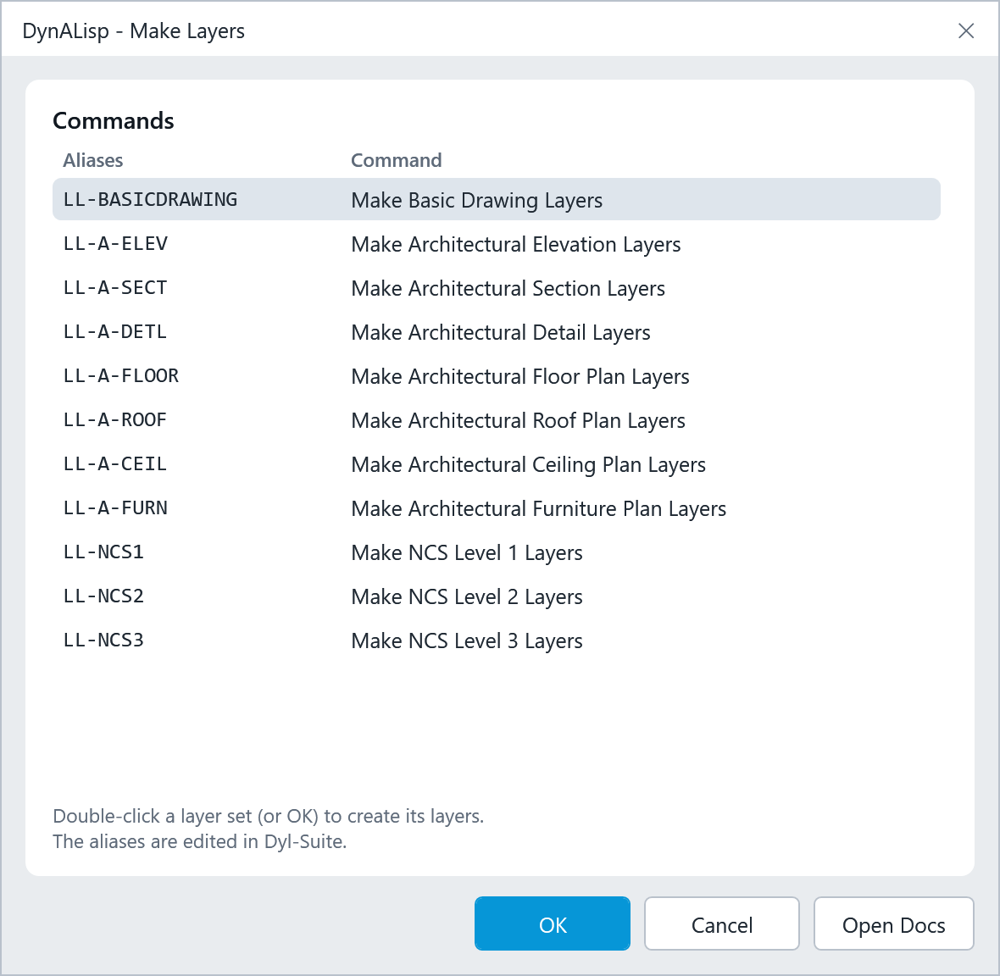

Créer des calques (Make Layers)
| Syntaxe | DYL-LAYERMAKE et 11 jeux de calques – voir Commandes |
| État | En développement – voir Limites connues |
| Licence | Licence publique générale GNU v3; fonctions CSV de Lee Mac |
Description
Créez tout le jeu de calques d'un type de dessin en une commande : un dessin de base, un plan, une élévation, une coupe ou un détail d'architecture, ou les calques NCS d'un niveau. Chaque calque reçoit son nom, sa couleur, son épaisseur de ligne, son type de ligne et son réglage de tracé de la norme de calques de DynALisp; les calques déjà présents sont mis à jour.
Les jeux de calques ne fonctionnent pas pour l'instant : ils s'arrêtent sur une erreur avant de créer les calques (voir Limites connues). Utilisez les clés de calque pour créer les calques de la norme un à un.

Utilisation
- Tapez l'alias du jeu : LL-A-FLOOR pour un plan d'étage d'architecture... (le tableau ci-dessous), ou tapez Dyl-LayerMake et double-cliquez un jeu.
- Quand le jeu est pour un dessin empilé, choisissez son niveau (None, 1-First... 9-Ninth); quand il est pour n'importe quelle discipline, choisissez la discipline.
- La ligne de commande liste chaque calque, créé ou mis à jour.
Commandes
| Commande | Nom | Dossier CSV | Fichiers CSV |
|---|---|---|---|
| LL-BASICDRAWING | Make Basic Drawing Layers | Dyl\Drawing | Basic.csv |
| LL-A-ELEV | Make Architectural Elevation Layers | Architecture | A-Elev.csv, A-Eqpm.csv, A-Anno.csv |
| LL-A-SECT | Make Architectural Section Layers | Architecture | A-Elev.csv, A-Eqpm.csv, A-Anno.csv |
| LL-A-DETL | Make Architectural Detail Layers | Architecture | A-Drawing.csv, A-Eqpm.csv, A-Anno.csv |
| LL-A-FLOOR | Make Architectural Floor Plan Layers | Architecture | A-Flor.csv, A-Eqpm.csv, A-Anno.csv |
| LL-A-ROOF | Make Architectural Roof Plan Layers | Architecture | A-Roof.csv, A-Eqpm.csv, A-Anno.csv |
| LL-A-CEIL | Make Architectural Ceiling Plan Layers | Architecture | A-Ceil.csv, A-Flor.csv, A-Eqpm.csv, A-Anno.csv |
| LL-A-FURN | Make Architectural Furniture Plan Layers | Architecture | A-Furn.csv, A-Flor.csv, A-Anno.csv |
| LL-NCS1 | Make NCS Level 1 Layers | NCS | 1-Architectural.csv, 1-Civil.csv, 1-Interior.csv, 1-Landscape.csv, 1-Structural.csv, 1-Civil.csv, 1-Plumbing.csv, 1-Electrical.csv, 1-Mechanical.csv |
| LL-NCS2 | Make NCS Level 2 Layers | NCS | 2-Architectural.csv, 2-Interior.csv, 2-Landscape.csv, 2-Structural.csv, 2-Civil.csv, 2-Plumbing.csv, 2-Electrical.csv, 2-Mechanical.csv |
| LL-NCS3 | Make NCS Level 3 Layers | NCS | 3-Architectural.csv, 2-Interior.csv, 3-Landscape.csv, 3-Structural.csv, 3-Civil.csv, 2-Plumbing.csv, 3-Electrical.csv, 3-Mechanical.csv |
Les dossiers CSV sont relatifs à Modules\Dynalisp\Res\Layer\List. Chaque CSV a les colonnes Designator, Major, Minor1, Minor2, Minor3, Description.
Limites connues
- La vérification de la discipline passe toute la liste des données CSV à wcmatch, qui n'accepte que du texte : les commandes s'arrêtent donc pour l'instant à cette étape avec une erreur bad argument type.
- Les rangées sans le repère 0000 ne produisent aucun nom de calque (le nom n'est construit que dans la substitution de l'empilement).
- Plusieurs noms de CSV ne correspondent pas aux fichiers livrés (p. ex. A-Elev.csv au lieu de A-Elevation.csv, dossier NCS au lieu de NCSv5); les fichiers manquants sont sautés en silence.
- L'option de groupe de couleurs (MinorColor, DesignatorColor, MajorColor, StackColor, PhaseColor) est fixée à MinorColor, qui n'ajoute aucune dérogation.
Noms des commandes et alias
Chaque programme a une commande principale qui commence par Dyl-. Les noms courts sont ses alias : ils lancent la même commande, et s'ajoutent, se renomment ou se retirent dans Dyl-Suite (enregistrés dans Resources\Aliases.csv). Les rangées marquées ↳ sont des commandes enfants de Dyl-LayerMake : elles se lancent par leur alias, ou se choisissent dans Dyl-LayerMake quand elle les liste (leur commande se nomme Pst-*).
| Commande | Alias | Nom |
|---|---|---|
| Dyl-LayerMake | – | Make Layers |
| ↳ LL-BASICDRAWING | – | Make Basic Drawing Layers |
| ↳ LL-A-ELEV | – | Make Architectural Elevation Layers |
| ↳ LL-A-SECT | – | Make Architectural Section Layers |
| ↳ LL-A-DETL | – | Make Architectural Detail Layers |
| ↳ LL-A-FLOOR | – | Make Architectural Floor Plan Layers |
| ↳ LL-A-ROOF | – | Make Architectural Roof Plan Layers |
| ↳ LL-A-CEIL | – | Make Architectural Ceiling Plan Layers |
| ↳ LL-A-FURN | – | Make Architectural Furniture Plan Layers |
| ↳ LL-NCS1 | – | Make NCS Level 1 Layers |
| ↳ LL-NCS2 | – | Make NCS Level 2 Layers |
| ↳ LL-NCS3 | – | Make NCS Level 3 Layers |